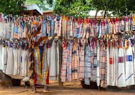

Les cascades de la région du Poro, notamment la cascade de Nafoun près de Boundiali, sont des merveilles naturelles entourées de végétation luxuriante. Elles offrent un cadre apaisant idéal pour les pique-niques et la photographie. Ces sites sont parfaits pour les amoureux de la nature et ceux qui cherchent à explorer la beauté authentique de la région.

.jpg)
Le marché artisanal de la région du Poro, notamment à Korhogo, est un lieu incontournable pour découvrir l'artisanat sénoufo. On y trouve des sculptures en bois, des tissus traditionnels, des bijoux faits main et bien d'autres objets reflétant le savoir-faire local. Ce marché est non seulement un espace de commerce, mais aussi un lieu de rencontre culturelle où les artisans partagent leur héritage avec les visiteurs. Une visite idéale pour apprécier la richesse de l'artisanat ivoirien.
.jpg)

Le Mont Korhogo, situé dans la région du Poro à Korhogo, est une colline emblématique qui culmine à environ 500 mètres d'altitude. Ce site naturel offre une vue panoramique sur la ville et ses environs, ce qui en fait une destination prisée pour les amateurs de randonnée et de paysages. En plus de son attrait touristique, le mont est également un symbole culturel et historique pour la région.


Le Festival du Senang, organisé à Korhogo dans la région du Poro, célèbre la culture sénoufo à travers danses traditionnelles, compétitions, expositions d'artisanat et découvertes gastronomiques. Cet événement annuel attire de nombreux visiteurs et met en valeur les traditions locales dans un esprit de partage et de fête.

Le Musée Péléforo Gbon Coulibaly, situé à Korhogo dans la région du Poro, est une ancienne maison de Péléforo Gbon Coulibaly, chef sénoufo influent. Converti en musée régional en 1992, il expose des objets artisanaux, masques traditionnels comme le Wabêle, et d'autres éléments culturels sénoufos. Ce lieu incarne un patrimoine historique et culturel vital pour la région.

Les tisserands de Waraniéné, un village situé près de Korhogo en Côte d'Ivoire, sont renommés pour leur art du tissage traditionnel. Ce village abrite environ 354 métiers à tisser, utilisés par près de 500 artisans et apprentis. Le tissage y est une tradition transmise de génération en génération, principalement par les hommes, tandis que les femmes participent au filage et à la couture. Les motifs tissés, comme le "cauris" ou la "peau d'ananas", sont souvent liés à des événements culturels tels que les mariages ou les cérémonies d'initiation. Ces créations attirent des acheteurs locaux et internationaux, faisant de Waraniéné une destination prisée pour découvrir cet artisanat unique

Les sculpteurs du quartier Koko à Korhogo, en Côte d'Ivoire, sont célèbres pour leur artisanat exceptionnel, notamment les masques, statuettes et autres objets décoratifs inspirés de la culture Sénoufo2. Ces artistes utilisent souvent du teck, qu'ils teignent pour imiter l'ébène, ou du bois de fromager, apprécié pour sa légèreté. Leurs œuvres incarnent des symboles culturels riches, comme le calao, symbole de sagesse et de bonheur, ou encore des masques cérémoniels. Si vous êtes passionné par l'artisanat ou la culture Sénoufo, ce quartier est une destination incontournable
Pour plus d'informations, visitez notre page d'accueil poro-tourisme.kgo.